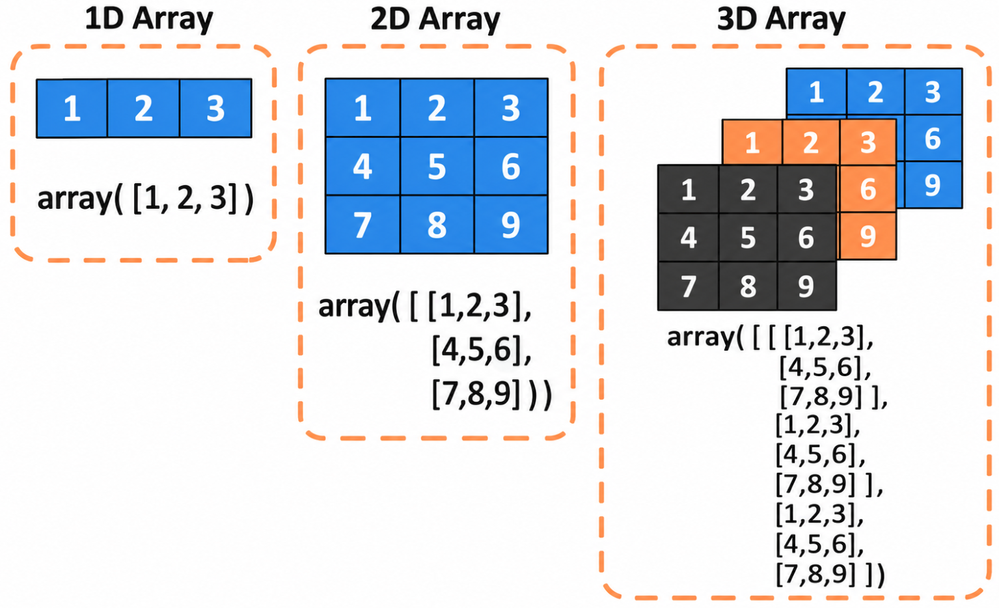
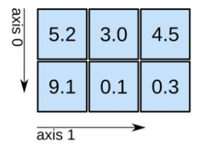
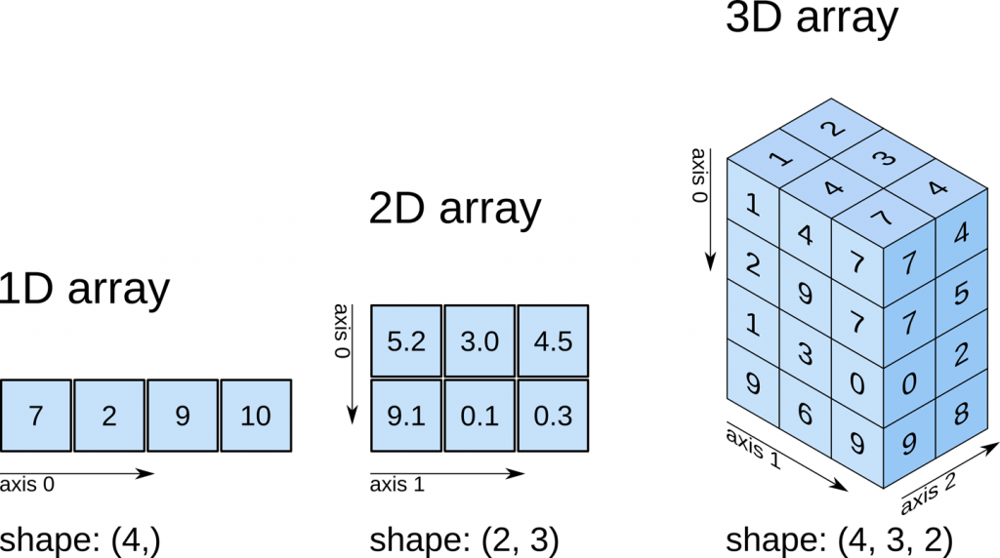

import numpy as npSéance 4 — Découverte de la bibliothèque Numpy
Introduction à Python · L3 Économie-Gestion
Objectifs
- Comprendre ce qu’est un
arrayNumPy et en quoi il diffère d’une liste. - Manipuler des vecteurs et des matrices stockés sous forme d’
array(Create, Read, Update) - Connaître les opérations méthématiques de base sur les
array
Le package Numpy
Présentation

- un des packages les plus connus dans l’éco-système Python
- dédié à la manipulation des vecteurs, et tableaux multidimensionnels
- optimisé pour les calculs numériques
- à la base d’autres packages utiles en analyse de données (
Scipy,Pandasnotamment)
Le type array
Le concept-clé de Numpy est le ndarray (pour n-dimensional array).
- c’est un type de données à part entière
- il contient des données homogènes
- il est multi-dimsensionnel

Créer un array
Il faut d’abord importer le package
Création en listant tous les éléments
Un array est un peu comme une list… mais ce n’en est pas une !
💡 On retiendra qu’on déclare un array avec np.array() ; on utilise des crochets et on passe une liste de lignes.
Les attributs d’un array
Dès sa création, un array “contient” intrinsèquement plusieurs attributs :
D’autres manières de créer un array
👉 np.arange() : on donne le départ, l’arrivée, et l’espacement des valeurs
👉 np.linspace() : on donne le départ, l’arrivée, et le nombre de valeurs
👉 np.zeros() : crée un array de la shape souhaitée, rempli de zéros
Manipulation d’un array de dimension 2
Créons un array :
Sélectionner des données (Read)
- Pour sélectionner une partie du tableau (
array), on utilise les crochets[ ]
- on passe ensuite les indices des lignes puis des colonnes que l’on souhaite
Sélectioner une cellule
Sélectionner une portion de ligne
Sélectionner une portion de colonne
Sélectionner une ligne
Sélectionner une colonne
Mettre à jour des données (Update)
Comme pour les listes, on ré-assigne une partie du tableau à sa valeur.
array([[ 0, 1, 2, 3, 4],
[10, 11, 12, 13, 14],
[20, 21, 22, 23, 24],
[30, 31, 32, 33, 34],
[40, 41, 42, 43, 44]])Supprimer des données ?
Avec une liste, on utilisait del() pour supprimer une valeur.
⛔ Avec un array, c’est impossible !
Contrairement à une liste, la taille d’un array est fixée à la création, et on ne peut pas la changer.
Le concept d’axis avec Numpy
Pour numpy, les données sont stockées de manière structurée.
Dans une “matrice”, c’est à dire un array en deux dimensions, il y a deux axis :
- l’
axis 0correspond aux lignes - l’
axis 1correspond aux colonnes

Lorsque on sélectionne de la donnée avec des crochets, l’ordre des indices correspondent à l’ordre des axis.
Lorsqu’on utilise .shape, Numpy affiche la profondeur selon chaque axis.

Opérations mathématiques
Opérations élement-par-élément
👉 On dispose des opérateurs +, -, /, *, ** :
👉 Ainsi que de nombreuses fonctions mathématiques comme np.exp, np.log, np.sqrt, np.round :
Opérations d’agrégation
On peut appliquer des fonctions d’agrégation directement sur un array.
💡 2 mannières de faire :
np.sum(wages): là, on utilise la fonctionsumde Numpywages.sum(): c’est équivalent et plus lisible ; unarraycontient intrinsèquement des fonctions de Numpy
(⬆️ on appelle ça de la programmation orientée objet)
Exemples des fonctions d’agrégation principales :
👉 Pour des calculs mathématiques basiques
14050 1650 3900👉 Pour des calculs statistiques
Il ne faut pas les connaître par coeur, il faut savoir les retrouver rapidement dans la documentation officielle de Numpy.
Agrégation le long d’un axis
sales = np.array([[100, 120, 90], # shop 1, three months
[200, 180, 210]]) # shop 2
print(sales.sum(axis=0)) # per month (down the rows)
print(sales.sum(axis=1)) # per shop (across the columns)[300 300 300]
[310 590]axis=0 : on agrège le long des lignes (résultat par colonne).
axis=1 : par ligne.
Résumé
| Notion | Syntaxe |
|---|---|
| créer un array | np.array([...]), np.arange, np.linspace, np.zeros |
| attributs principaux | a.shape, a.ndim, a.dtype |
| sélectionner des données | a[i, j], a[:, j] |
| calcul élément par élément | a * b, np.exp(a), a ** 2, etc. |
| fonctions d’agréagtion | a.sum(), a.sum(axis=0), etc. |
A vous de jouer
👉 Exercices du TD 4
Introduction à Python — L3 Économie-Gestion